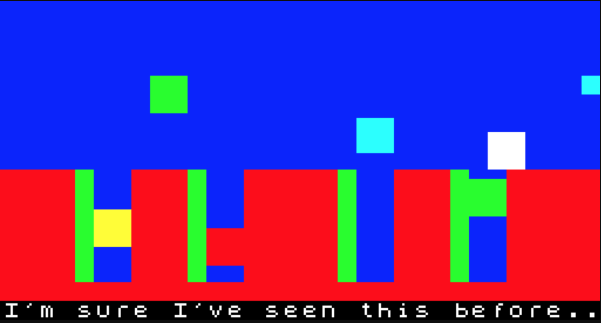
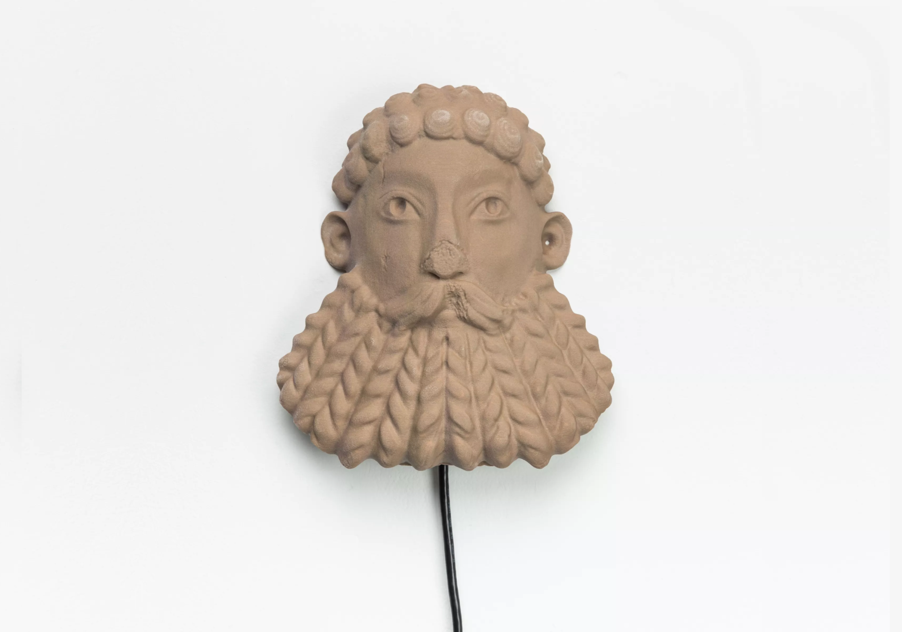
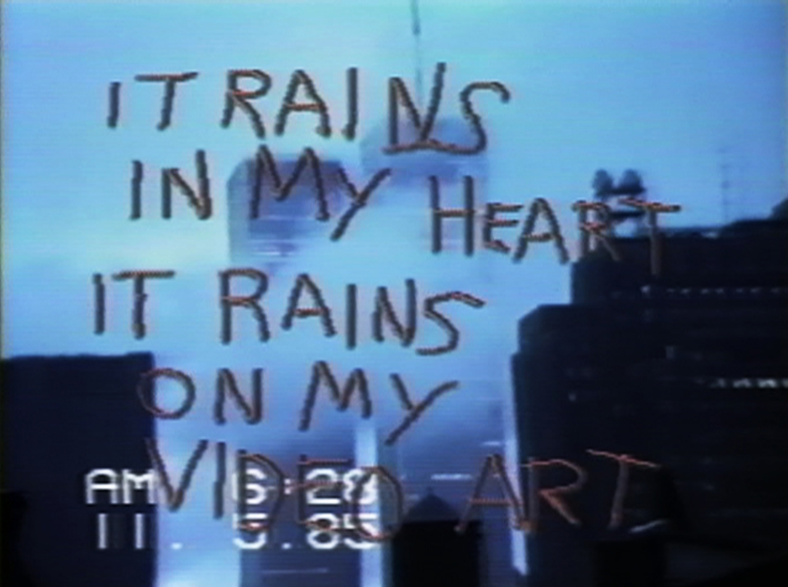
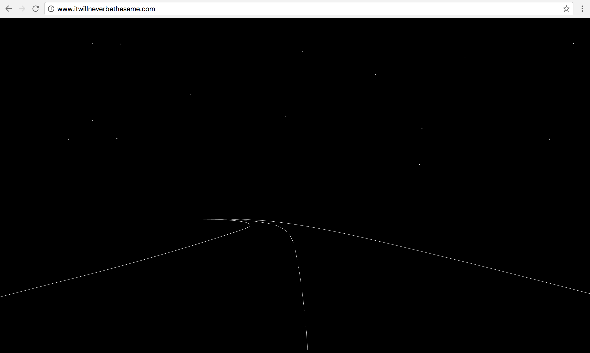
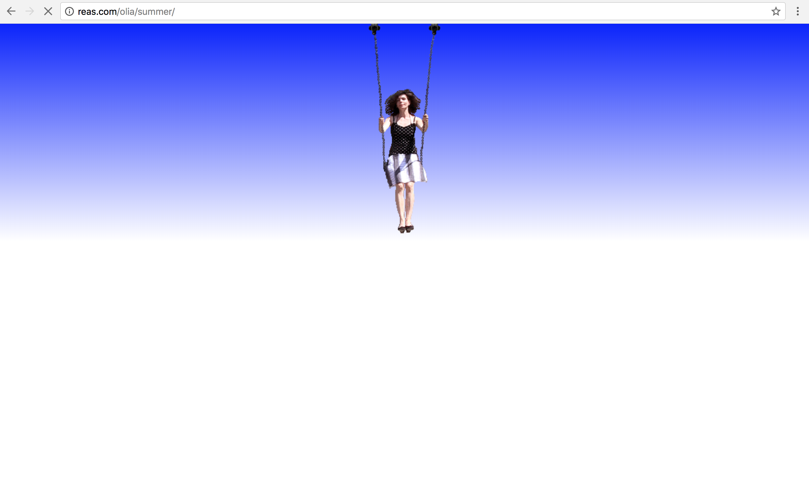
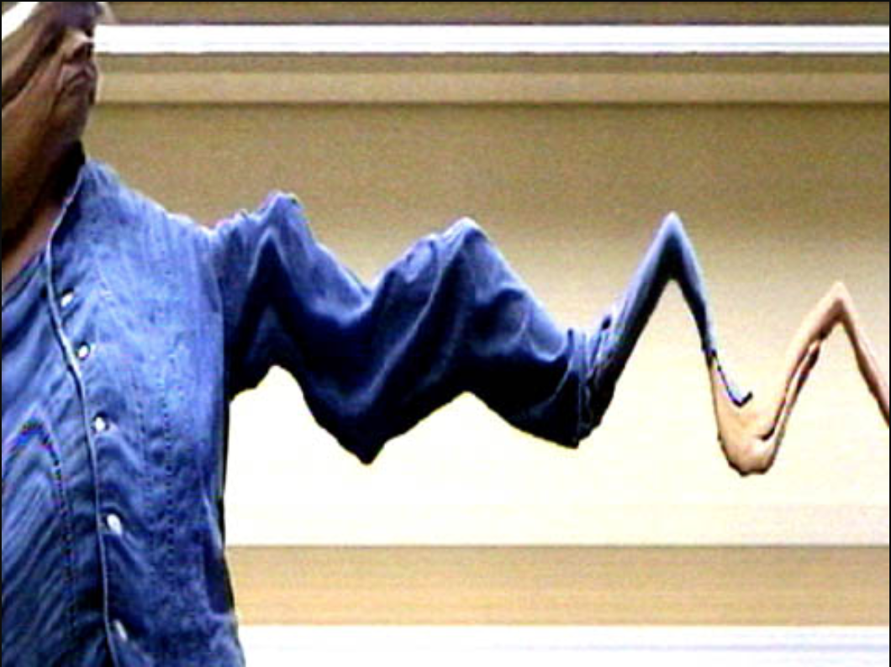

The Current // Permanence
Hosted by Ben Fino-Radin
Artworks selected by Ben Fino-Radin are presented salon-style for members of The Current in our SoHo location. Join us for a discussion on the topic of 'Permanence' on Wednesday, May 23rd at 8PM EST.

JODI – 'Jet Set Willy Variations © 1984' (2002)
6 Datatapes, + Digital .audio files, 6 Software Files .sna + .tap playable in emulator, 6 Screengrab Videos of gameplay (aprox. 10min. each), 6 Game Walkthrough Maps, dimensions variable. Based on Jet Set Willy Game-engine. Edition of 5 +2AP View Online

Morehshin Allahyari – 'South Ivan Human Heads: Bearded River God' (2017)
3D Printed Sandstone, 'Dead Drop' Files and Electronic Components. Edition 3 + AP Courtesy of Upfor Gallery

Shigeko Kubota – 'SoHo SoAp/Rain Damage' (1985)
Video with Audio, Duration 08:25. On loan courtesy of EAI
“Throughout centuries, artists have engaged with the impulse to memorialize, to be remembered, and the impulse to collect, archive, and preserve. If one looks closely enough, one sees however that permanence is really just change in slow motion. Nothing is permanent. Nothing lasts forever.” Read the full salon statement from Ben Fino-Radin

Rafäel Rozendaal – 'itwillneverbethesame.com' (2004)
Website. Unique Edition View Online

Olia Lialina – 'Summer' (2013)
Animated GIF on loan courtesy of the artist View Online

Steina Vasulka – 'Warp' (2000)
Digital video, color, sound. Duration: O4:13

Takeshi Murata – 'Untitled (Pink Dot)' (2006)
Single channel video on DVD, Duration: 05:00 looped (20
minute soundtrack by Robert Beatty.) Watch Online

{kind=link}
{kind=link}
{kind=link}
{kind=link}
{kind=link}
{kind=link}